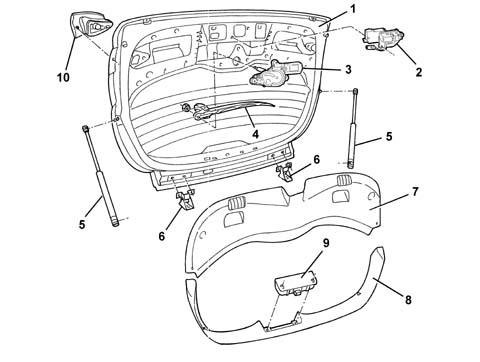

Introduction - TAILGATE/
- Path
- Descriptions > 70 FITTINGS > 7015 TAILGATE/ > Introduction - TAILGATE/
- Kind
- system description
- Applies to
- all engines; all production periods
- Interactive page
- https://sloeber94.github.io/elrnDB-a147/en/#/3026120
Applies to: all engines; all production periods
SPECIFICATIONS
The tailgate is manufactured using conventional pressing processes and includes large window bonded flush with the tailgate. The edges that overlap the structure are screen-printed in black. The window features a demisting circuit that also includes the area around the third brake light and the rear wiper blade parking area.
The tail-gate can be opened:
- by turning the key directly in the lock;
- by using the button in the centre of the dashboard;
- by remote control, via a button on the ignition key.
The tail-gate is held in position by two gas struts.
COMPOSITION
View of tail-gate components

1 - Tail-gate 2 - Tail-gate catch 3 - Rear wash/wipe motor 4 - Wiper blade 5 - Telescopic strut 6 - Tail-gate hinge 7 - Lower interior trim 8 - Side/upper trim 9 - Third brake light 10 - Interior tail-light